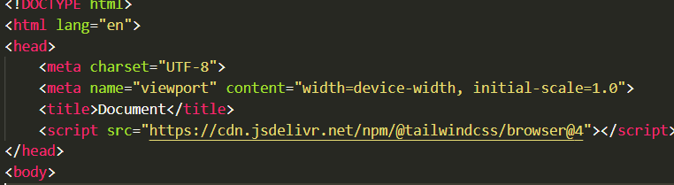

this is code text

Hello world
გეოგრაფია · ისტორია · მეცნიერება · რელიგია · საზოგადოება · სამართალი · სპორტი · ხელოვნება · საქართველო can also be referred to as states with limited recognition, constituent countries, or dependent territories, with their own government.[1][2][3][4] A country may consist of multiple nations, a structure known as a multinational state.[5] Countries are often distinguished as developing countries or developed countries.[6] There is no universal agreement on the number of "countries" in the world.[7][8] This ambiguity is a result of several countries not being recognized as sovereign states by the UN system, but are recognized by at least one UN member, known as "diplomatic recognition'. These countries often have disputed territories and have only partial recognition.[8] A number of entities without recognition are also commonly considered a country.[8][9] Areas other than a political entity may be referred to as a "country", such as the West Country in England, "big sky country" (used in various contexts of the American West), "coal country" (used to describe coal-mining regions), or simply "the country" (used to describe a rural area).[10][11] The term "country" is also used as a qualifier descriptively, such as country music, cottage country or country living.[12] The definition and usage of the word "country" has fluctuated and changed over time. The Economist wrote in 2010 that "any attempt to find a clear definition of a country soon runs into a thicket of exceptions and anomalies."Definition